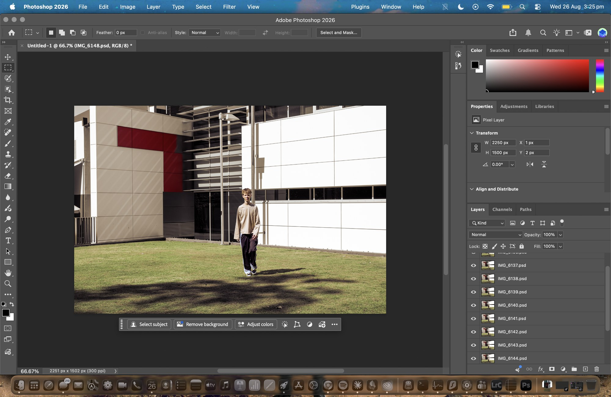
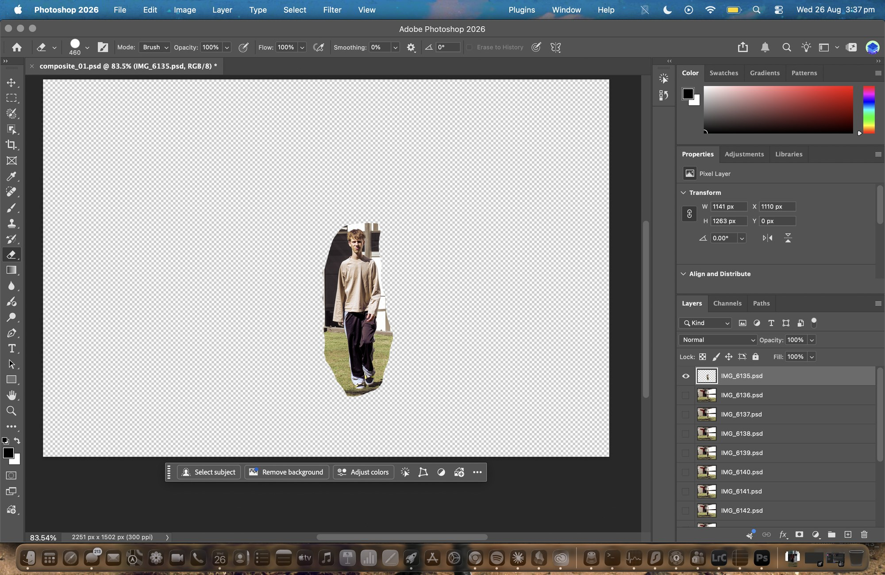
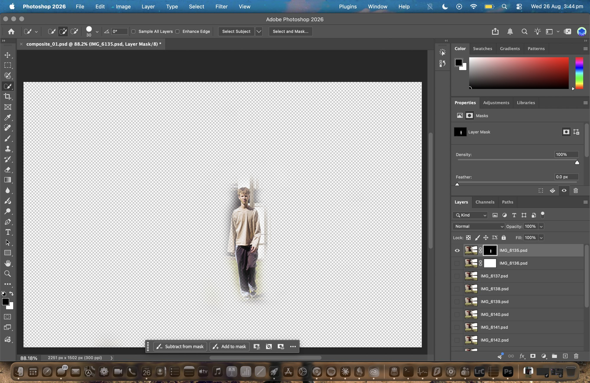
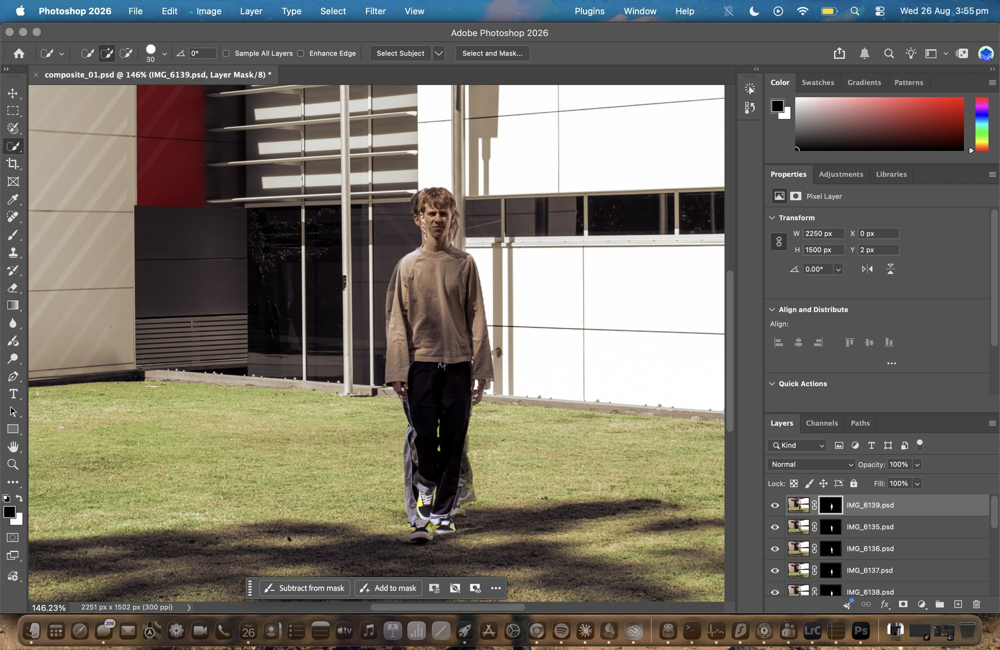
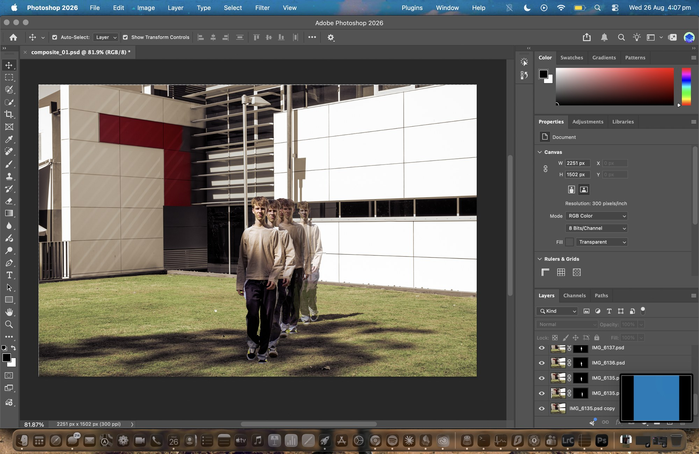
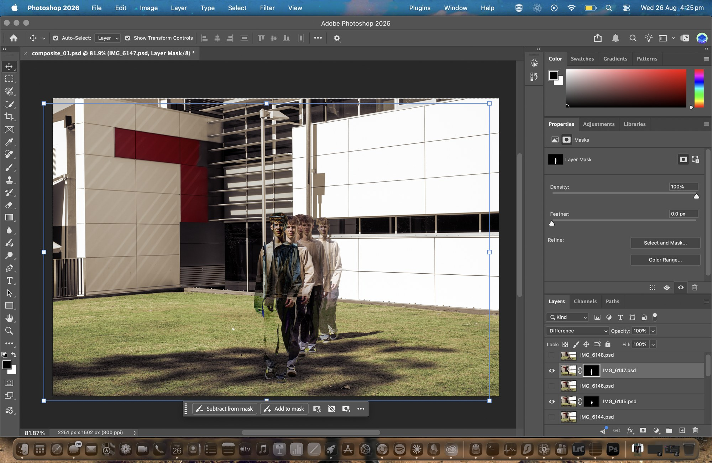
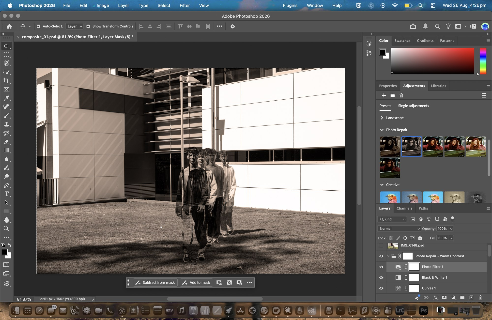
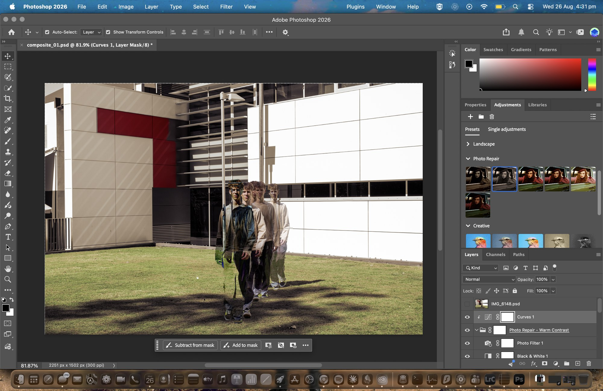
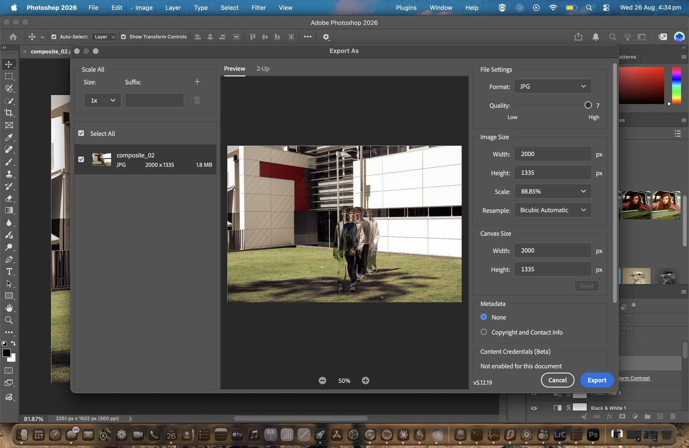

What I was trying to do
The camera never moved across the whole shoot, so the building sits in exactly the same spot in every frame while the figure walks through it. Stacking those frames and revealing him out of each one gives a multiple exposure, meaning the same person appears several times across one image mid stride. It is a way of showing movement without any actual motion, which is more or less the problem this whole course is about, and it feeds straight into Tasks 04 and 05.
The stack

Brought in through File, Scripts, Load Files into Stack with automatic alignment turned on, so each shot arrives as its own layer in one document. Because every one of them came out of the same synced Lightroom grade the layers match tonally straight away with no correction needed, which is the payoff for having synced the settings back in Task 02 instead of grading each frame separately.
Cutting the figure out
Every layer needs the figure separated from the background before any of it works. I reached for the obvious tool first and it turned out to be the wrong call.

This did not work. The edges came out rough, there is still grass and part of the building stuck to his shoulder, and it has cut straight through his hair. The bigger issue is that the Eraser deletes the pixels themselves, so once they are gone the only way to get them back is stepping through the History panel, and across ten layers that all need the same job done one bad cut means starting that layer over. There is also nothing left to refine afterwards, because there is no edge to adjust, only absence.

Object Select reads the actual edge of the figure rather than following my brush, so it held his hair and the loose sleeve where the Eraser had failed, and with the selection still active clicking Add Layer Mask turns it straight into a mask. Because a mask hides pixels instead of deleting them I could paint parts back in whenever the selection clipped a shoe. This is the same principle as the masking I had already done in Lightroom, just in a different program.
Spacing, and getting it wrong first

Built from five frames in a row, but he only moves about half a stride between each shot, so all five figures landed on top of each other. The result looks like the shot is out of register rather than like a study of movement, and your eye reads one blurry figure instead of a sequence of positions.

Same method with a wider gap between the shots. Once there is clear space between each position the figures become individually readable and your eye moves across them from one to the next. I then stepped the opacity down through the stack so the front figure sits at full strength and the ones behind it fade, which is what tells you which direction time is running. Without that fade it just looks like four people standing on a lawn.
I kept the version that failed on purpose, because the method itself was never the problem and the gap between the frames was, and I would not have worked that out without building the bad one first.
Blending modes

Difference subtracts one layer's pixel values from whatever is underneath it, so matching areas return black and anything that differs inverts. Where he overlaps his own earlier position it breaks into inverted colour, but the background stays clean because the camera never moved and those pixels are identical in both layers. I tried Divide, Screen and Multiply as well, and Difference was the only one that produced something specific to this image rather than a generic colour shift.
Adjustment layers

An Adjustments preset dropped in three layers at once, Photo Filter, Black and White, and Curves. Sitting on top of the stack they affect every layer underneath them, which pushes the whole composite into a warm monochrome. Losing the green of the lawn means the figures carry the frame rather than competing with it.

You can see the indent and the small arrow next to the Curves thumbnail. Clipping limits an adjustment to the single layer directly below it instead of everything underneath, which is the difference between grading the whole composite and grading one figure inside it. It would not clip at all while it was sitting at the bottom of the group, because there was nothing inside that group beneath it to clip to, and moving it out so a pixel layer sat directly underneath is what made it work.
Size and format
I saved each stage as its own separate PSD, 01 for the version that failed and 02 for the one that worked, rather than overwriting a single working file. Keeping both meant that if something went wrong I could go back to an earlier state and branch off it instead of starting the whole thing again.

The layered PSD stays at 2251 by 1502 with every mask and adjustment intact, while Export As writes a separate JPG at 2000 px on the long edge at quality 7. That is safer than using Image Size, which resizes the document I actually have open and then has to be undone afterwards. Export As never modifies the original, so there is nothing for me to forget to reverse.